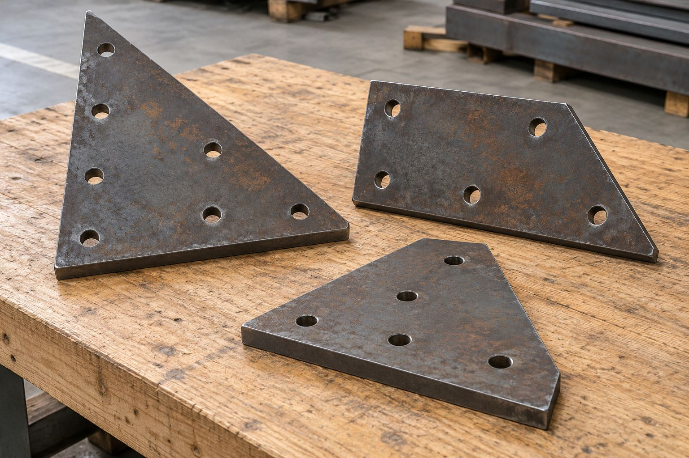

Processed materialSTRUCTURAL CONNECTION PLATE BLANKS
Weathering Steel Gusset Plates
Polygonal connection plates cut and drilled to an approved structural drawing. Define the outline, hole pattern and material identity as one controlled part schedule.
View product ↗